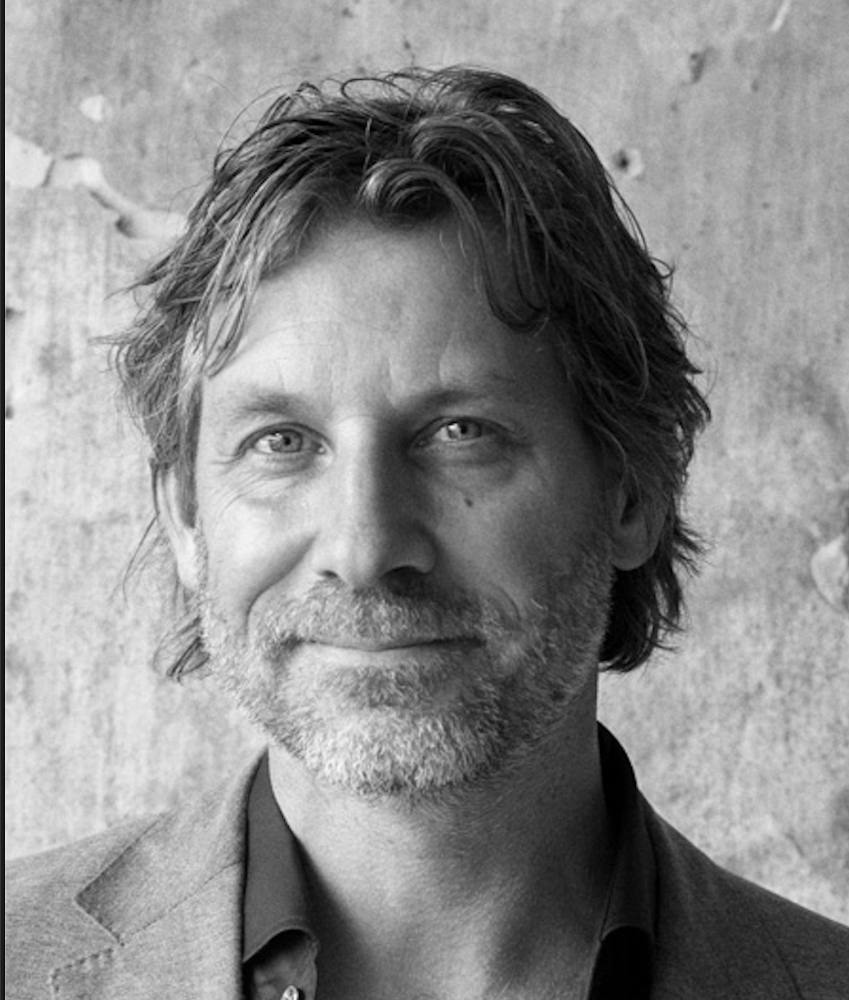

This project was created by Martijn Aslander. I am a technology philosopher, author of fifteen books — including Easycratie (Easycracy), Nooit af (Never Finished) and Ons werk is stuk (Our Work Is Broken), and recently two books about Obsidian, a powerful and free tool for information autonomy — and I have spent more than twenty years working on the question of how people and organisations deal with information. That work led to the concept of Digital Fitness, to more than 2,500 presentations, and to a conviction that kept growing stronger: informatisation does not have to be as complicated as we have made it.
In 2025 I set out to prove that conviction by building a personal information system with the help of AI. Not as an experiment or a hobby, but as working proof that a single person with the right tools can achieve what organisations spend years deliberating about. What emerged is a modern version of the Memex, the mythical machine that Vannevar Bush described in 1945 in As We May Think — a system that documents, connects and makes searchable everything I encounter.
I previously applied that same system and method to the Zettelkasten of Niklas Luhmann, the most famous knowledge system in the academic world. And now to the war archive of the province where I come from. The Groningen War Puzzles are therefore the third application of an approach I developed in practice: informatising large volumes of unstructured information with Agentic AI, and making visible the patterns that remain invisible to the naked eye.
The cards come from the archive of the Oorlogs- en Verzetscentrum Groningen (War and Resistance Centre Groningen, OVCG), part of the Groninger Archieven (Groningen Archives), accession number 2183. All cards are publicly accessible.
This experiment is an accidental but entirely logical by-product of the Pilot Information Autonomy, an ongoing laboratory where I work with a small group of motivated people, supported by an advisory board, on precisely these kinds of questions — questions that are alive in government and public administration, and that we try to make transparent and practically manageable.
On 9 April 2026, I presented this project for the first time at the VOGIN-IP conference in the OBA in Amsterdam.
The goal of this project is to unlock this war archive in an entirely new way, to make it easy to contribute additional puzzle pieces so we can make the puzzle more complete, and to map what we can infer from what is not there — because that is a project in itself. And hopefully it can serve as inspiration for others who work with archives.
This project started with a card. The card of my mother's father, Albert Lunshof. My grandfather.
This project came about by accident, as a by-product of a search for my grandfather. Now it is available to the world and I am happy to collaborate — with researchers, documentary makers and archive professionals. Do you have information, memories or sources that can confirm or supplement a story? Every contribution is included with source attribution.
Every hypothesis on this site is an open question. If you have information that confirms, refutes or supplements a story — a photo, a document, a memory, an archival find — we would like to hear from you.
Your contribution will be reviewed and may increase the Evidence Provability (EP) score of a hypothesis. Every contribution is included with source attribution.
The form opens in a new window. Your contribution reaches us directly.